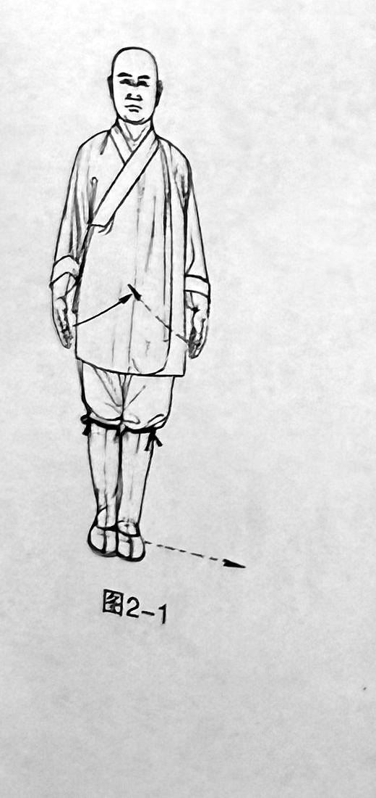
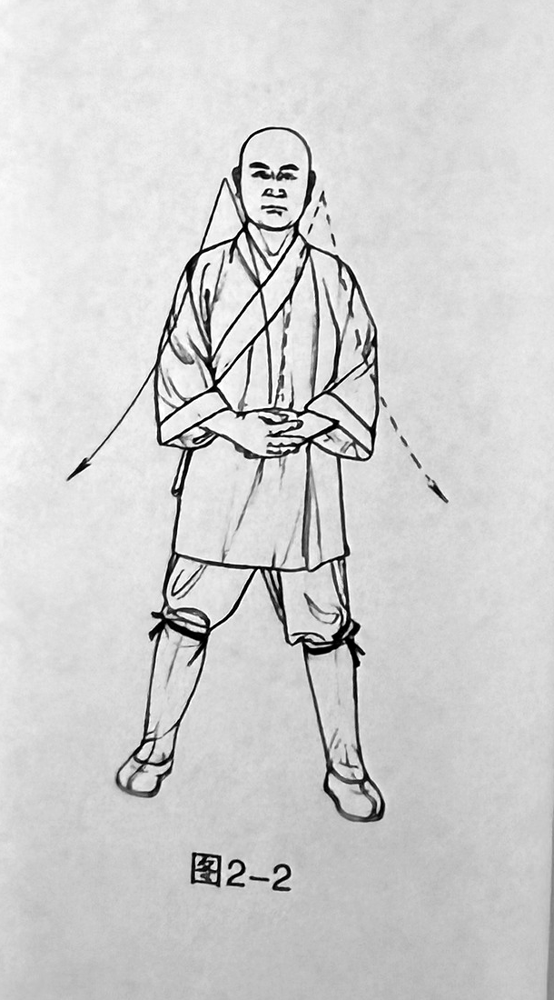

Shaolin Tu-Na Health-Preservation Practice · Review prototype
I. Standing-Method Tu-Na Practice

1
Breathe naturally
Bring the feet together and stand with the body aligned upright; let both open hands hang at the sides of the body. Gaze forward.

2
Several deep inhalations and prolonged exhalations
Step the left foot one step horizontally to the left, leaving the feet slightly more than shoulder-width apart; at the same time, draw in both open hands and hold them at the dantian (lower abdomen), with the right palm on the outside.
After the posture has been set, remain still. Perform several deep inhalations and prolonged exhalations; determine the number yourself.